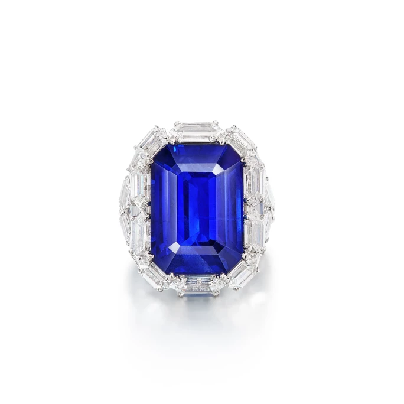
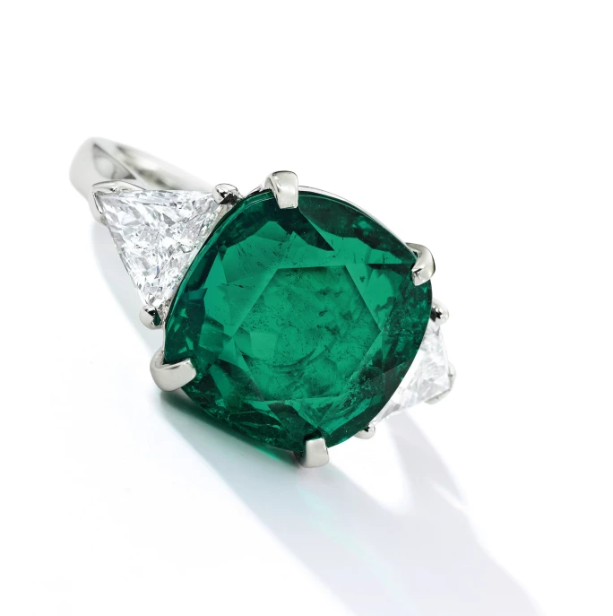
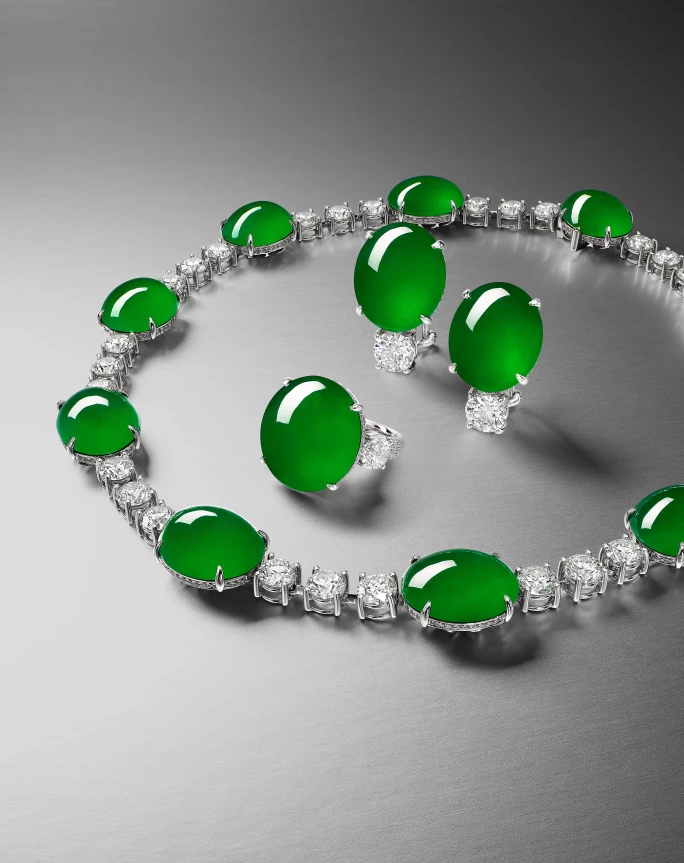
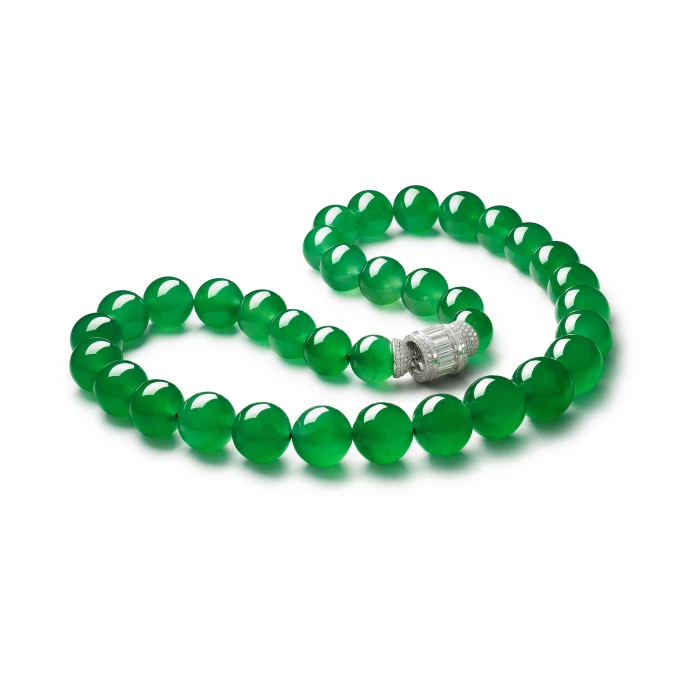
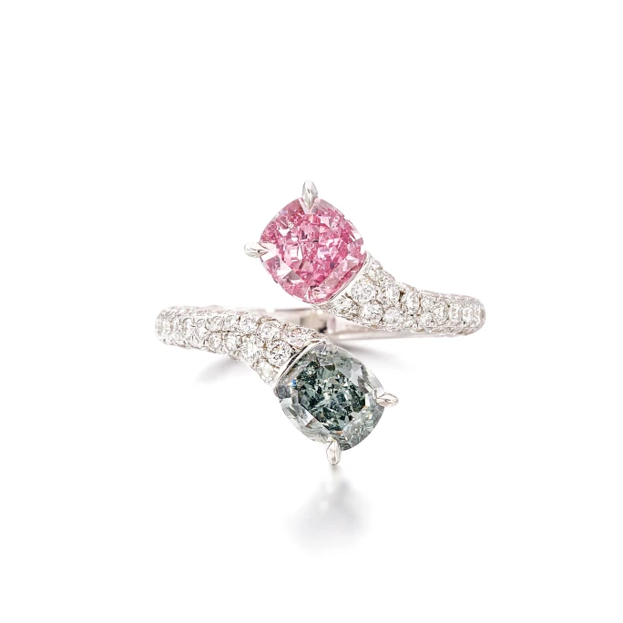
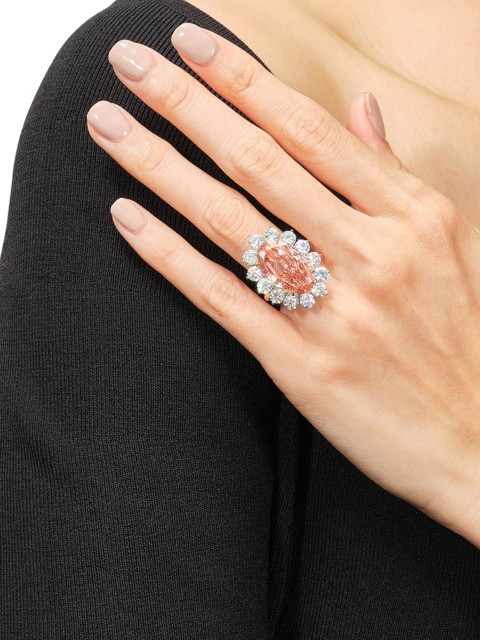

譯自 Divia Harilela · Sotheby's Hong Kong · 2022年12月4日
蘇富比將於12月7日至9日在新加坡舉行珠寶展覽。在這個到處洋溢佳節氣氛的聖誕冬日，我們誠意向您推薦藏家願望清單上的珠寶單品。
在琳瑯滿目的瑰麗首飾當中，高級珠寶突圍而出，因為它們既可以作為贈予摯愛的心意臻禮，也是犒賞自己的最佳禮物。適逢佳節歡聚，派對連連，現在正好是讓精美首飾華麗亮相的絕妙時機。
為此，我們特意從12月7日至9日在新加坡麗晶酒店舉行的蘇富比珠寶展中，精選出適合在節日期間佩戴或投資的單品，迎接閃亮聖誕。
戒指在手 彰顯個性
雞尾酒戒指（cocktail ring）在二十年代的美國禁酒令時期開始流行，象徵獨立和個性，一直受到自我意識強烈的女性青睞。雖然雞尾酒戒指的設計多年來不斷演變，但經典款式始終最受歡迎。鑽石等較小的寶石襯托著置中的主石，流光溢彩，芳華盡顯。不妨考慮以祖母綠或紅寶石為主石的戒指，再一反傳統，在手上混搭不同顏色的寶石飾品。
寶石的形狀也是一門學問，運用得宜可以為整體造型加分。圓形比較傳統，古墊形則更具現代氣息。
溫馨提示：記得每隻手只戴一枚戒指，因為越多不一定等於越好！

Forms 鑲嵌 | 藍寶石配鑽石戒指

祖母綠配鑽石戒指
特色珠寶 展現真我
平日佩戴會略嫌浮誇、或為特別場合準備的珠寶，現在正好趁著佳節一見天日。只要戴上個性突出的特色珠寶登場，連高級時裝也會黯然失色。這些珠寶不但在設計上獨一無二，所用工藝更展示出知名珠寶品牌享負盛名的創新技術。不過無論是選擇彩色寶石項鍊還是彩鑽戒指，都要記得搭配低調的服裝，例如是黑色的雞尾酒禮服，讓珠寶能夠在聚光燈下散發迷人艷光。
矜貴翡翠 意涵深遠
翡翠碧綠清澄，翠艷欲滴，在原產地亞洲以外的地區亦深受歡迎。翡翠色彩豐富，變化無窮，能搭配任何膚色，但最珍貴的當屬「帝王綠」。
中國文化認為「帝王綠」翡翠具有神奇力量，能夠辟邪護身。它們象徵美麗和純潔，適合贈予摯愛，同時亦是絕佳的投資。
翡翠手鐲能夠融入各種場合和風格，是受人喜愛的禮物。雙手戴上多件翡翠手鐲更顯摩登時尚。如今翡翠的設計更趨當代，例如是靈感來自裝飾藝術風格的長項鍊和串珠項鍊，配上鑽石更是別出心裁，從細節見巧思。

罕有「帝王綠」翡翠配鑽石首飾套裝

翡翠珠配鑽石項鍊
璀璨彩鑽 變化萬千
多個世紀以來，白鑽因其璀璨奪目而備受推崇，但彩鑽獨特的成因和稀少的產量亦令人萬分嚮往，絕對是一份過目難忘的禮物。彩鑽和白鑽同樣渾然天成，但彩鑽通常含有微量的特定礦物質，因而折射出萬千色相，絢麗多彩。
在眾多顏色中，嬌柔旖旎的粉紅鑽算是非常稀有：每顆粉紅鑽各有千秋，呈現出濃粉、橙粉、紫粉等色調，輕易擄獲人心。
除此以外，藍鑽和灰鑽同樣令人一見傾心，愛不釋手。

艷彩紫粉紅色鑽石及暗彩藍灰色鑽石配鑽石戒指

深彩橙粉紅色鑽石配鑽石戒指